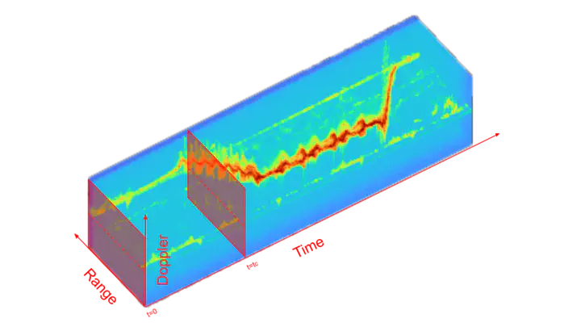
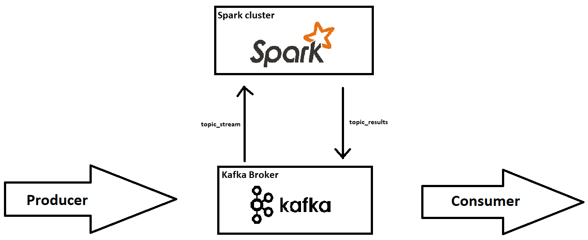

Radio Wave Activity Detection
Developed a machine learning model to detect radio wave activity from raw data, focusing
on signal processing and communication systems. Utilized Python, scikit-learn, and
custom data visualization to identify patterns in radio signals.

Spiking Neural Networks
Designed and implemented spiking neural network architectures for temporal pattern
recognition, leveraging reward-modulated STDP. Explored advanced training techniques
using snnTorch and SpykeTorch, with experiments on Liquid State Machines and recurrent
convolutional layers.

Volatility Carry Trading Strategy
Created a quantitative trading strategy centered on volatility carry. Performed
backtesting and optimization of trading models using Python libraries such as pandas,
NumPy, and matplotlib to analyze market data and evaluate performance metrics.

Audio Keyword Spotting (AudioKWS)
Developed a system for real-time voice command recognition. Integrated signal processing
techniques and machine learning models using tools like Librosa and PyTorch to detect
specific keywords in audio streams with high accuracy.

Financial Mathematics
Created a repository of mathematical models and algorithms for finance, including pricing
derivatives, portfolio optimization, and risk analysis. Focused on clarity and
precision, with implementations in Python.

Cosmic Rays Live Dashboard
Built a real-time data pipeline and dashboard to monitor cosmic ray activity using Apache
Spark and Kafka. Processed high-frequency data streams and visualized results
dynamically, showcasing expertise in distributed systems and real-time analytics.